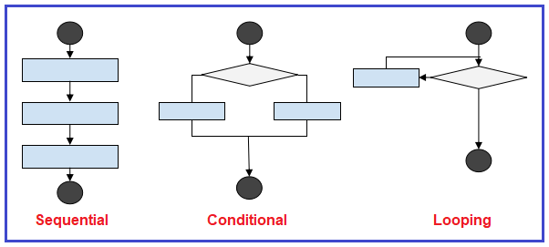

An analogy to describe JavaScript and its relationship to HTML and CSS.
Javascript is a powerful programming language used to manipulate HTML and CSS properties through the Document Object Model. The relationship between Javascript and HTML + CSS is that of a puppet master and a puppet show; We get to see the stage and all the puppets performing but what we cannot see are the strings that the master uses to manipulate everything from above. Without these strings, the puppets would lie lifeless on the stage, not moving or interacting with one another or the audience. Sure the stage is beautifully crafted and the puppets are amazing objects to look at but to create a truely dynamic experience, we need the puppet master.
Explain control flow and loops using an example process from everyday life.
Control flow in the context of programming is the order that instructions are executed. Lines of code are just instructions telling a computer what to do and these instructions are typically read from top to bottom. A loop is a special event that occurs within the control flow which tells the computer to repeat a set of instructions a number times and then continue to the next instruction below.

How would we instruct a computer to make us a cup of tea? First we would tell it to get a cup and tea bag from the pantry, boil some water, put tea bag in cup and pour water in. The instructions so far are one off and fit into the normal control flow (executing an instruction once and moving on). The next instruction would be to dunk the tea bag at least a few times to get the desired taste. This is an instance where we may use a for loop to instruct a computer to make several similar actions. After extracting the required flavour, the computer can move back onto the normal control flow and continue executing one off instructions (place cup on coaster and instruct me that the tea is ready).
Describe what the DOM is and an example of how you might interact with it.
The document object model (DOM) is a modular representation of a webpage that uses objects to represent every HTML element associated with that page. The DOM is structured as a family tree that begins with the window and/or document object, followed by all of its children, and their children, and so on. To manipulate an object within the DOM, first you must access it through the various DOM API’s that are provided within your browser.
Javascript is a programming language (though not the only) that is extensively used to create DOM manipulations on webpages. Accessing DOM objects is as easy as calling various methods from the document object (accessible from within Javascript) to select the particular object you want to manipulate.
Have a look at this website that pushes the limits of DOM manipulation to create a story drive journey through their website. Also have a look at this video tutorial by WesBos which shows you how to programme a drum machine that you can play with your keyboard!
Explain the difference between accessing data from arrays and objects.
Accessing data from arrays and objects comes down to how each collection stores the data inside of it. Arrays store data in a list and each item has an associated index value that allows us access to that particular item. To access an item inside an array, you simply supply the array with the correct index to retrieve the required piece of data.
Objects store data using key/value pairs. Within this pair, stored data is the value and it’s key is how you access that data. To retrieve data from an object, you simply append the key (in front) of the object variable. There are two common methods to append a key. First you can use dot notation ( object.key ) which is good if the key is one only word. If the key is a string with more than 1 word, you have to use the bracket notation ( object[‘key’] ) to retrieve the data.
Explain what functions are and why they are helpful.
Functions are reusable blocks of code that you can repeat as many times as you need; It’s a good idea to put a block of code inside it’s own function if you find yourself repeating it many times within your programme. Functions can take inputs( parameters/arguments ), do some internal magic using code and finally return an output. With that being said, functions do not always require an input or output to work and can instead cause “side effects.”
Functions are helpful in two ways. First, they allow you to repeat a block of code elsewhere, cutting down on the lines of code you need to create your programme. The second reason why functions are help is that they can remove the visual noise of logic and allow you to think of your programme execution at a higher level. Use descriptive function names to abstract you programme into a few lines that clearly describe what is happening within your programme without you having to worry about the exact details (line by line instructions).